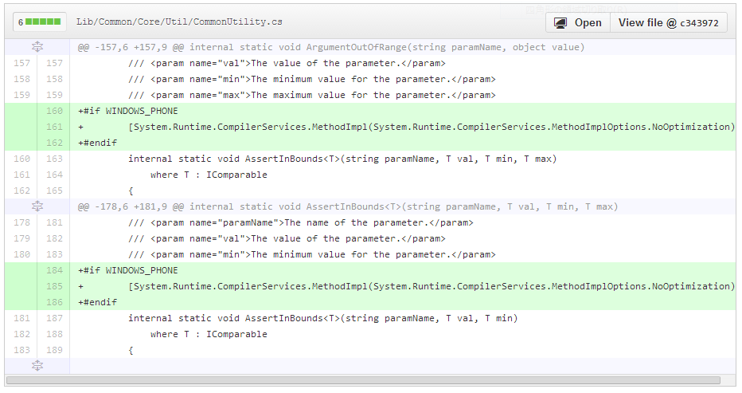

Windows Azure Storage 3.0.2 Hotfix
2014/1/4Windows Azure Storage 3.0.2がリリースされました。2013/11/27 3.0のリリース 「Windows Azure Storage Release - CORS、JSON、Minute Metrics の紹介」、2013/12/11 の 3.0.1 hotfix 「Windows Azure Storage Client 3.0.1」 に続く３回めのリリースです。

修正点
- All (WP): 多くのAPIで ArgumentOutOfRangeException になる問題の修正
- Queues: 存在するqueueの再度作成で、NullReferenceException になる問題を修正
- Tables: レスポンスがparseできなかったときに、TableServiceContext が NullReferenceException になる問題を修正
- Tables (RT): JSON形式がまだRT library でサポートされていないため、ユーザーは、RTで RequestOptions に JsonFullMetadata formart を設定することはできません
コードを確認したところ、最初のやつが興味深いものでした。
1. All (WP): 多くのAPIで ArgumentOutOfRangeException になる問題の修正
対象は、Windows Phone プラットフォームだけで特定のAPIでなく全般的に発生します。関連する Issue として 、System.ArgumentOutOfRangeException in Microsoft.WindowsAzure.Storage.Table.CloudTable.EndExecuteが出ています。
共通で使っている、API内のパラメータのバウンダリー検査関数（AssertInBounds）が動いていなくてあちこちで問題が発生するということになっていたようです。（そうは言っても、テストはしているので、そうそう起きるわけでは無いとは思います）
Storage Client Library 3.0.2 のPRでdiffを見みると、WINDOWS_PHONEだけで下記のように修正されていました。
#if WINDOWS_PHONE で AssertInBounds に、[System.Runtime.CompilerServices.MethodImpl(System.Runtime.CompilerServices.MethodImplOptions.NoOptimization)]を指定しています。この指定は、JITやNGENでのコード最適化を抑制するもので、[1]Windows Phone の場合だけ native code 生成に問題があったので抑制するオプションを付けたということです。
Windows Phone というだけで、どのような場合に発生する問題かなどわかりませんが、WP アプリのコードが挙動不審の場合は試してみると良いかもしれません。Storage Clinet Library内では、この方法で修正されているようなので問題は無いのですが、普通に書いたコードでも起きるとすると、ちょっと困りますね。もう少し詳しい情報が欲しいところです。[2]
これ以外は、あまり気になる点はありませんでした。互換性の問題も無さそうなので、3系のStorage Clinetは 3.0.2 を使うのがお勧めです。
2014/1/11 追記 Windows Phoneの問題
PR の質問に返事を貰いました。
この問題は、Windows Phone でだけ起き、assemblyに、AssertInBoundsとAssertInBounds 両方が存在する場合に、最適化で実行時にAssertInBoundsの間違ったインスタンス化を選択することによって引き起こされる
internal static void AssertInBounds<T>(string paramName, T val, T min, T max) where T : IComparableと、internal static void AssertInBounds<T>(string paramName, T val, T min) where T : IComparableの両方が同一 assembly にあるのが問題のようです。 必ず起きるというわけでも無さそうなので、Windows Phone で嵌ったら思い出してみるという程度で良さそうです。
| [1] | About System.Runtime.CompilerServices.MethodImplOptions |
| [2] | We escalated this internally ... |